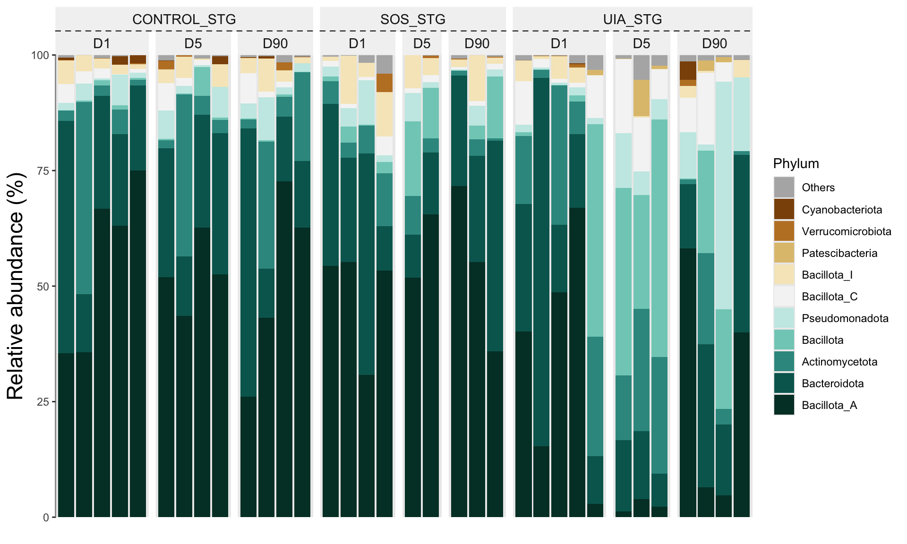
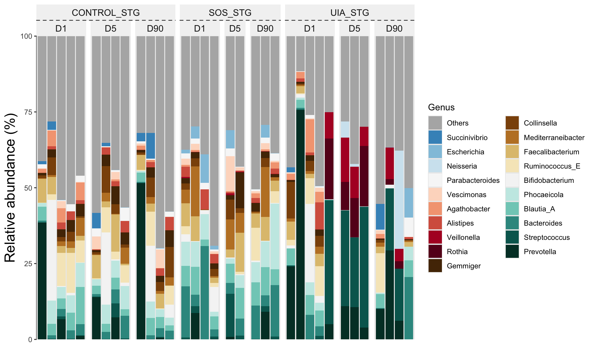
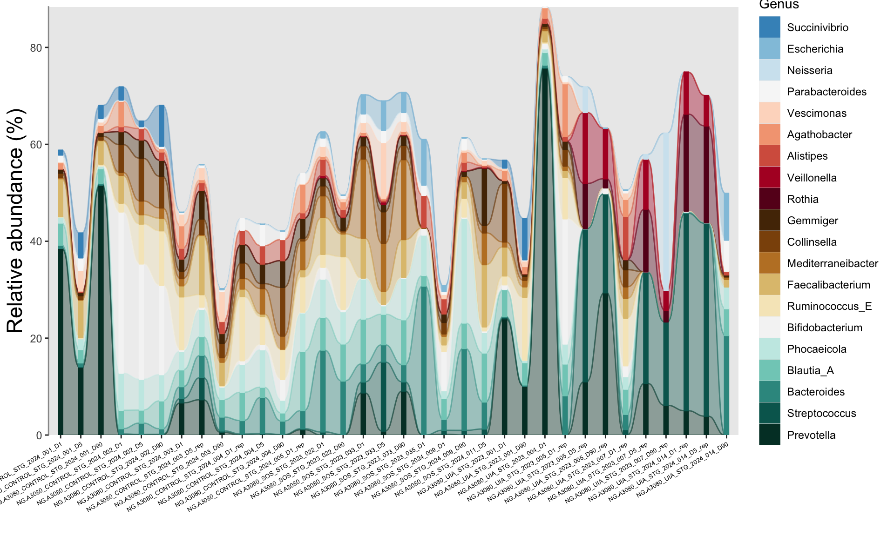
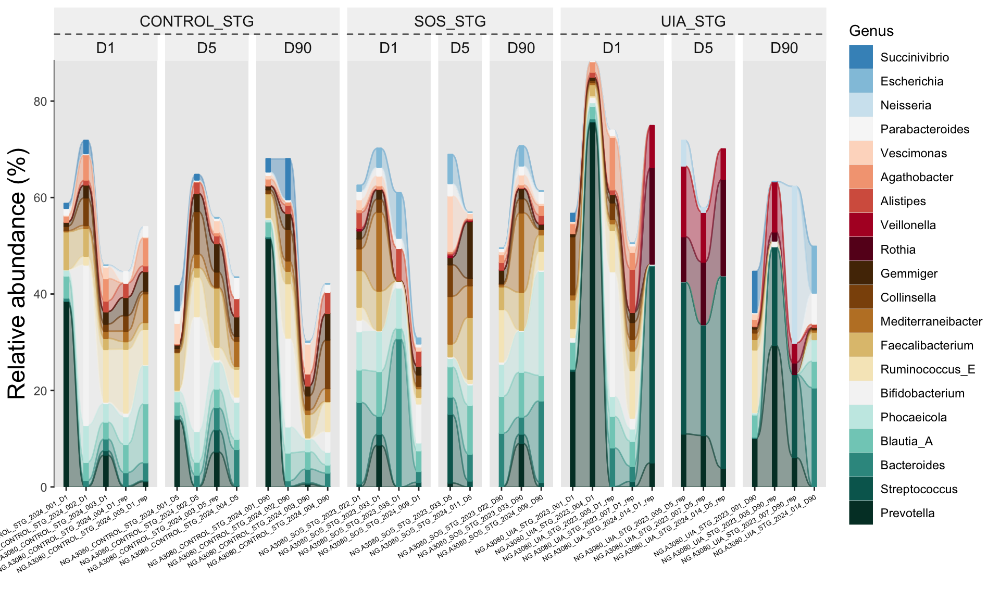
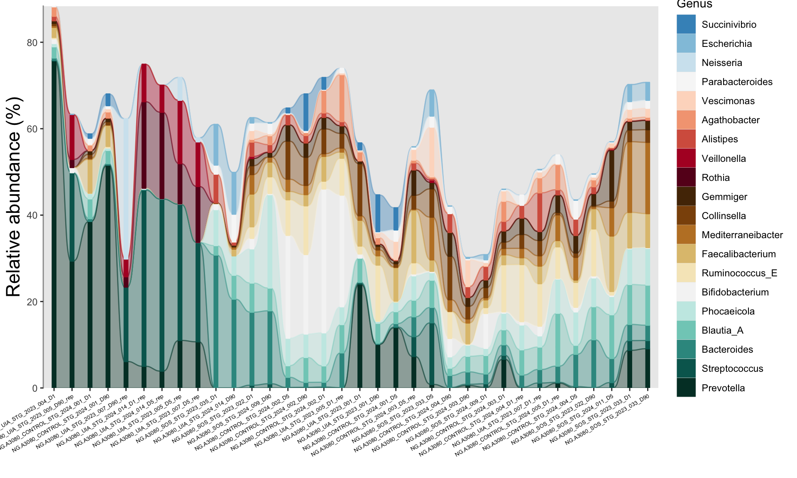
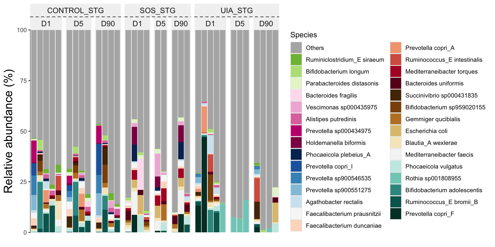
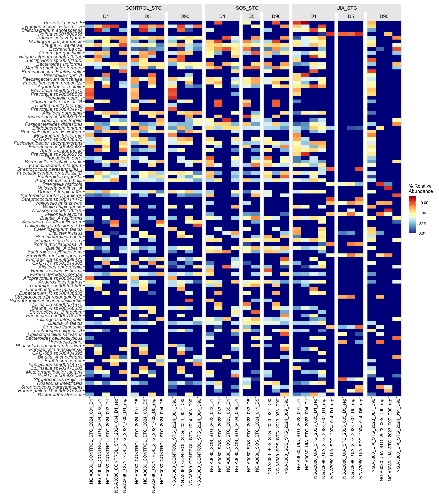

Last updated: 2025-07-07
Checks: 5 2
Knit directory: MicrobiomeIH/
This reproducible R Markdown analysis was created with workflowr (version 1.7.1). The Checks tab describes the reproducibility checks that were applied when the results were created. The Past versions tab lists the development history.
The R Markdown is untracked by Git. To know which version of the R
Markdown file created these results, you’ll want to first commit it to
the Git repo. If you’re still working on the analysis, you can ignore
this warning. When you’re finished, you can run
wflow_publish to commit the R Markdown file and build the
HTML.
Great job! The global environment was empty. Objects defined in the global environment can affect the analysis in your R Markdown file in unknown ways. For reproduciblity it’s best to always run the code in an empty environment.
The command set.seed(20250707) was run prior to running
the code in the R Markdown file. Setting a seed ensures that any results
that rely on randomness, e.g. subsampling or permutations, are
reproducible.
Great job! Recording the operating system, R version, and package versions is critical for reproducibility.
Nice! There were no cached chunks for this analysis, so you can be confident that you successfully produced the results during this run.
Using absolute paths to the files within your workflowr project makes it difficult for you and others to run your code on a different machine. Change the absolute path(s) below to the suggested relative path(s) to make your code more reproducible.
| absolute | relative |
|---|---|
| /Users/immbio/Desktop/Project/Angelina/MicrobiomeIH/data/02_sylph_results/sylph_output_table.tsv | data/02_sylph_results/sylph_output_table.tsv |
| /Users/immbio/Desktop/Project/Angelina/MicrobiomeIH/data/02_sylph_results/formatted_output.mpa | data/02_sylph_results/formatted_output.mpa |
Great! You are using Git for version control. Tracking code development and connecting the code version to the results is critical for reproducibility.
The results in this page were generated with repository version 2ca7c7f. See the Past versions tab to see a history of the changes made to the R Markdown and HTML files.
Note that you need to be careful to ensure that all relevant files for
the analysis have been committed to Git prior to generating the results
(you can use wflow_publish or
wflow_git_commit). workflowr only checks the R Markdown
file, but you know if there are other scripts or data files that it
depends on. Below is the status of the Git repository when the results
were generated:
Ignored files:
Ignored: .DS_Store
Ignored: .Rproj.user/
Ignored: data/02_sylph_results/
Untracked files:
Untracked: CSV_Export/
Untracked: analysis/CSV_Export/
Untracked: analysis/Diversity.Rmd
Untracked: analysis/MetagenomePart1.Rmd
Untracked: analysis/RelAbundance.Rmd
Untracked: analysis/RelAbundances.Rmd
Unstaged changes:
Modified: analysis/index.Rmd
Note that any generated files, e.g. HTML, png, CSS, etc., are not included in this status report because it is ok for generated content to have uncommitted changes.
There are no past versions. Publish this analysis with
wflow_publish() to start tracking its development.
library(ggplot2)
library(microeco)
library(file2meco)
library(data.table)
library(dplyr)
library(magrittr)
library(ggdendro)
library(DT)
library(ggpubr)
library(ggnested)
library(RColorBrewer)
library(ggalluvial)combined_sylph <- read.delim("/Users/immbio/Desktop/Project/Angelina/MicrobiomeIH/data/02_sylph_results/sylph_output_table.tsv")
df <- combined_sylph
colnames(df) <- clean_column_names(colnames(df))
df_subset <- df # potential filtering
formatted_file_path <- "/Users/immbio/Desktop/Project/Angelina/MicrobiomeIH/data/02_sylph_results/formatted_output.mpa"
fwrite(df_subset, formatted_file_path, sep = "\t", quote = FALSE, col.names = TRUE) #needs to be in a file to convert for microecoformatted_file_path <- "/Users/immbio/Desktop/Project/Angelina/MicrobiomeIH/data/02_sylph_results/formatted_output.mpa" # output file of the Taxonomic Profiling Pipeline
micro_data <- mpa2meco(formatted_file_path)
otu_table <- micro_data$otu_table
taxa_table <- micro_data$tax_table
sample_table <- micro_data$sample_table
## add Group (disease cond)
sample_table$Group[grepl("UIA_STG", rownames(sample_table))] <- "UIA_STG"
sample_table$Group[grepl("SOS_STG", rownames(sample_table))] <- "SOS_STG"
sample_table$Group[grepl("CONTROL_STG", rownames(sample_table))] <- "CONTROL_STG"
## add Timepoint
sample_table$Timepoint[grepl("D1", rownames(sample_table))] <- "D1"
sample_table$Timepoint[grepl("D5", rownames(sample_table))] <- "D5"
sample_table$Timepoint[grepl("D90", rownames(sample_table))] <- "D90"
## combine Group and Timepoint
sample_table$GroupTimepoint <- paste(sample_table$Group, sample_table$Timepoint , sep = "_")
## add SampleID (patient)
sample_table$SampleID[grepl("_001_", rownames(sample_table))] <- "001"
sample_table$SampleID[grepl("_002_", rownames(sample_table))] <- "002"
sample_table$SampleID[grepl("_003_", rownames(sample_table))] <- "003"
sample_table$SampleID[grepl("_004_", rownames(sample_table))] <- "004"
sample_table$SampleID[grepl("_005_", rownames(sample_table))] <- "005"
sample_table$SampleID[grepl("_007_", rownames(sample_table))] <- "007"
sample_table$SampleID[grepl("_009_", rownames(sample_table))] <- "009"
sample_table$SampleID[grepl("_011_", rownames(sample_table))] <- "009"
sample_table$SampleID[grepl("_014_", rownames(sample_table))] <- "014"
sample_table$SampleID[grepl("_022_", rownames(sample_table))] <- "022"
sample_table$SampleID[grepl("_033_", rownames(sample_table))] <- "033"
sample_table$SampleID[grepl("_035_", rownames(sample_table))] <- "035"
#sample_table <- sample_table %>%
#filter(!grepl("\\.1$", SampleID))
#sample_table <- dplyr::filter(sample_table, grepl("BW", SampleID, ignore.case = TRUE))
sample_table <- droplevels(sample_table)
micro_data$sample_table <- sample_table# Combine
my_colors <- c(
rev(brewer.pal(11, "BrBG")),
brewer.pal(11, "RdBu"),
brewer.pal(11, "PiYG")
)
# Optional: remove duplicates if any
my_colors <- unique(my_colors)micro_data$cal_abund()
taxa_abundance <- micro_data$taxa_abundif (!dir.exists("CSV_Export")) {
dir.create("CSV_Export")
} else {
# Remove all files in the directory
files <- list.files("CSV_Export", full.names = TRUE)
if (length(files) > 0) {
file.remove(files)
}
}[1] TRUE TRUE TRUE TRUE TRUE TRUE TRUEsample_id <- sample_table$SampleID[1]
for (taxa_level in names(taxa_abundance)) {
file_name <- paste0("CSV_Export/", sample_id, "_", taxa_level, ".csv")
write.csv(taxa_abundance[[taxa_level]], file_name, row.names = TRUE)
}# create trans_abund object
# select top 15 abundant Phyla.
t1 <- trans_abund$new(dataset = micro_data, taxrank = "Phylum", ntaxa = 10)
t1$plot_bar(others_color = "grey70", facet = c("Group", "Timepoint"), xtext_keep = FALSE, legend_text_italic = FALSE, color_values = my_colors)
# create trans_abund object
# select top 20 abundant Genera.
t1 <- trans_abund$new(dataset = micro_data, taxrank = "Genus", ntaxa = 20)
t1$plot_bar(others_color = "grey70", facet = c("Group","Timepoint"), xtext_keep = FALSE, legend_text_italic = FALSE, color_values = my_colors)
# require ggalluvial package
# use_alluvium = TRUE make the alluvial plot, clustering =TRUE can be used to reorder the samples by clustering
# bar_type = FALSE can remove 'others'
t1$plot_bar(bar_full = FALSE, use_alluvium = TRUE, clustering = FALSE, xtext_angle = 30, xtext_size = 5, color_values = my_colors)
t1$plot_bar(bar_full = FALSE, use_alluvium = TRUE, clustering = FALSE, xtext_angle = 30, xtext_size = 5, color_values = my_colors, facet = c("Group", "Timepoint"))
t1$plot_bar(bar_full = FALSE, use_alluvium = TRUE, clustering = TRUE, xtext_angle = 30, xtext_size = 5, color_values = my_colors)
t1 <- trans_abund$new(dataset = micro_data, taxrank = "Species", ntaxa = 30)
t1$plot_bar(others_color = "grey70", facet = c("Group", "Timepoint"), xtext_keep = FALSE, legend_text_italic = FALSE, color_values = my_colors)
t1 <- trans_abund$new(dataset = micro_data, taxrank = "Species", ntaxa = 100)
g1 <- t1$plot_heatmap(xtext_keep = T,xtext_angle=90, withmargin = FALSE, plot_breaks = c(0.01, 0.1, 1, 10), facet = c("Group", "Timepoint"))
g1 + theme(axis.text.y = element_text(face = 'italic'))
date()[1] "Mon Jul 7 19:22:15 2025"sessionInfo()R version 4.4.0 (2024-04-24)
Platform: x86_64-apple-darwin20
Running under: macOS Ventura 13.7.6
Matrix products: default
BLAS: /Library/Frameworks/R.framework/Versions/4.4-x86_64/Resources/lib/libRblas.0.dylib
LAPACK: /Library/Frameworks/R.framework/Versions/4.4-x86_64/Resources/lib/libRlapack.dylib; LAPACK version 3.12.0
locale:
[1] en_US.UTF-8/en_US.UTF-8/en_US.UTF-8/C/en_US.UTF-8/en_US.UTF-8
time zone: Europe/Zurich
tzcode source: internal
attached base packages:
[1] stats graphics grDevices utils datasets methods base
other attached packages:
[1] ggalluvial_0.12.5 RColorBrewer_1.1-3 ggnested_0.1.0 ggpubr_0.6.0 DT_0.33
[6] ggdendro_0.2.0 magrittr_2.0.3 dplyr_1.1.4 data.table_1.17.4 file2meco_0.9.1
[11] microeco_1.15.0 ggplot2_3.5.2
loaded via a namespace (and not attached):
[1] tidyselect_1.2.1 farver_2.1.2 fastmap_1.2.0 promises_1.3.3
[5] digest_0.6.37 lifecycle_1.0.4 cluster_2.1.8.1 compiler_4.4.0
[9] rlang_1.1.6 sass_0.4.10 tools_4.4.0 igraph_2.1.4
[13] yaml_2.3.10 knitr_1.50 ggsignif_0.6.4 labeling_0.4.3
[17] htmlwidgets_1.6.4 plyr_1.8.9 xml2_1.3.8 abind_1.4-8
[21] workflowr_1.7.1 withr_3.0.2 purrr_1.0.4 grid_4.4.0
[25] ggh4x_0.3.1 git2r_0.36.2 Rhdf5lib_1.26.0 scales_1.4.0
[29] MASS_7.3-65 cli_3.6.5 rmarkdown_2.29 vegan_2.6-10
[33] generics_0.1.4 rstudioapi_0.17.1 reshape2_1.4.4 ape_5.8-1
[37] cachem_1.1.0 rhdf5_2.48.0 stringr_1.5.1 splines_4.4.0
[41] parallel_4.4.0 vctrs_0.6.5 Matrix_1.7-3 jsonlite_2.0.0
[45] carData_3.0-5 car_3.1-3 rstatix_0.7.2 Formula_1.2-5
[49] tidyr_1.3.1 jquerylib_0.1.4 glue_1.8.0 ggtext_0.1.2
[53] stringi_1.8.7 gtable_0.3.6 later_1.4.2 plotwidgets_0.5.1
[57] tibble_3.2.1 pillar_1.10.2 htmltools_0.5.8.1 rhdf5filters_1.16.0
[61] R6_2.6.1 rprojroot_2.0.4 evaluate_1.0.3 lattice_0.22-7
[65] backports_1.5.0 gridtext_0.1.5 broom_1.0.8 httpuv_1.6.16
[69] bslib_0.9.0 Rcpp_1.0.14 nlme_3.1-168 permute_0.9-7
[73] mgcv_1.9-3 xfun_0.52 fs_1.6.6 pkgconfig_2.0.3
sessionInfo()R version 4.4.0 (2024-04-24)
Platform: x86_64-apple-darwin20
Running under: macOS Ventura 13.7.6
Matrix products: default
BLAS: /Library/Frameworks/R.framework/Versions/4.4-x86_64/Resources/lib/libRblas.0.dylib
LAPACK: /Library/Frameworks/R.framework/Versions/4.4-x86_64/Resources/lib/libRlapack.dylib; LAPACK version 3.12.0
locale:
[1] en_US.UTF-8/en_US.UTF-8/en_US.UTF-8/C/en_US.UTF-8/en_US.UTF-8
time zone: Europe/Zurich
tzcode source: internal
attached base packages:
[1] stats graphics grDevices utils datasets methods base
other attached packages:
[1] ggalluvial_0.12.5 RColorBrewer_1.1-3 ggnested_0.1.0 ggpubr_0.6.0 DT_0.33
[6] ggdendro_0.2.0 magrittr_2.0.3 dplyr_1.1.4 data.table_1.17.4 file2meco_0.9.1
[11] microeco_1.15.0 ggplot2_3.5.2
loaded via a namespace (and not attached):
[1] tidyselect_1.2.1 farver_2.1.2 fastmap_1.2.0 promises_1.3.3
[5] digest_0.6.37 lifecycle_1.0.4 cluster_2.1.8.1 compiler_4.4.0
[9] rlang_1.1.6 sass_0.4.10 tools_4.4.0 igraph_2.1.4
[13] yaml_2.3.10 knitr_1.50 ggsignif_0.6.4 labeling_0.4.3
[17] htmlwidgets_1.6.4 plyr_1.8.9 xml2_1.3.8 abind_1.4-8
[21] workflowr_1.7.1 withr_3.0.2 purrr_1.0.4 grid_4.4.0
[25] ggh4x_0.3.1 git2r_0.36.2 Rhdf5lib_1.26.0 scales_1.4.0
[29] MASS_7.3-65 cli_3.6.5 rmarkdown_2.29 vegan_2.6-10
[33] generics_0.1.4 rstudioapi_0.17.1 reshape2_1.4.4 ape_5.8-1
[37] cachem_1.1.0 rhdf5_2.48.0 stringr_1.5.1 splines_4.4.0
[41] parallel_4.4.0 vctrs_0.6.5 Matrix_1.7-3 jsonlite_2.0.0
[45] carData_3.0-5 car_3.1-3 rstatix_0.7.2 Formula_1.2-5
[49] tidyr_1.3.1 jquerylib_0.1.4 glue_1.8.0 ggtext_0.1.2
[53] stringi_1.8.7 gtable_0.3.6 later_1.4.2 plotwidgets_0.5.1
[57] tibble_3.2.1 pillar_1.10.2 htmltools_0.5.8.1 rhdf5filters_1.16.0
[61] R6_2.6.1 rprojroot_2.0.4 evaluate_1.0.3 lattice_0.22-7
[65] backports_1.5.0 gridtext_0.1.5 broom_1.0.8 httpuv_1.6.16
[69] bslib_0.9.0 Rcpp_1.0.14 nlme_3.1-168 permute_0.9-7
[73] mgcv_1.9-3 xfun_0.52 fs_1.6.6 pkgconfig_2.0.3